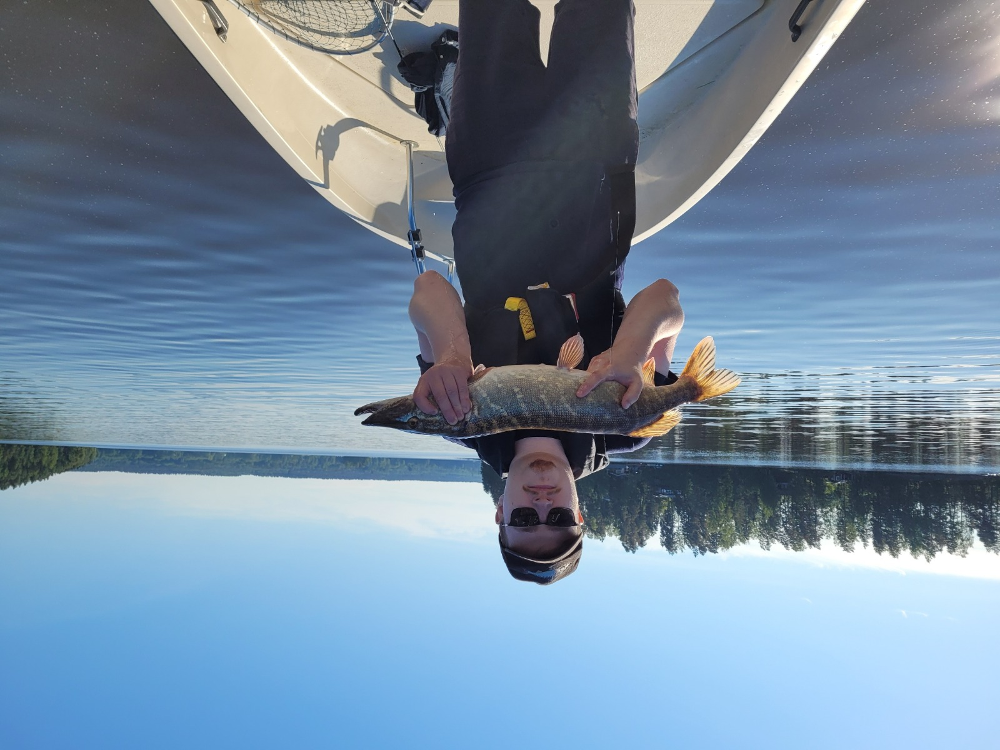

Tietoa sivusta
Päivitetty: 25.11.2021

Sivuston sisällön kuvaus
Tervetuloa Suomikalastus kotisivulle. Tämä sivu on perustettu vuonna 2021 syksyllä, yhden innokkaan tietojenkäsittelyopiskelijan toimesta. Sivun tarkoitus on kertoa kalastuksesta suomessa yleisesti, sekä antaa hyviä vinkkejä kalastuksesta kiinnostuneille. Sivuston tieto perustuu henkilökohtaisiin kokemuksiin harrastuspohjalta, sekä kalastusharrastajien omia kokemuksia tarinoiden ja videoiden muodossa. Kotivivuiltamme löydätte myös hyödylliseksi koettuja linkkejä ulkoisille sivustoille, jos haluaa esimerkiksi hankkia itselleen kalastusluvan tai kalastusoppaan.
Kalastus Suomessa
Päivitetty: 25.11.2021

Yleistietoa Suomessa kalastuksesta
Kalastus on parhaimmillaan monimuotoinen ja ympärivuotinen harrastus, jota voi toteuttaa yksin tai ryhmässä. Suomessa kalastus on yleisimmin harrastus mutta se voi olla myös elinkeino, mutta tällä sivustolla keskitymme harrastuskalastukseen ja sen monimuotoisuuteen. Suomessa kalastamiseen voi tarvita kalastusluvan, riippuen sijainnista ja käytettävästä kalastus välineestä, tästä kerromme lisää Galleria sivullamme. Suomessa suositellaan tutustumaan kalastuslakiin, sillä kalastukseen liittyy myös vastuita, kuten kestävään kalastukseen liittyvä ekologinen, taloudellinen ja sosiaalinen vastuu. Jos haluaa kalastukseen liittyvää ammattiohjausta ja kokea ainutlaatuisia elämyksiä, niin kannattaa ottaa yhteyttä kalastusoppaaseen. Olemme keränneet tälle sivulle parhaaksi katsotuiden kalastusoppaiden linkit.
Ajankohtaista
Päivitetty: 25.11.2021
Kalastustarinat sivustollamme
Sivustoillamme pääset seuraamaan harrastajien kalastusreissuja Tarinoita sivullamme. Uusimpana tarinankertojana sivustollamme toimii Tuomo, jolla on kalastuskokemusta takana jo vuosikymmeniä. Pilkkikauden lähestyessä voimme valmistautua talveen ja sen tuomiin haasteisiin viimevuoden tarinoiden muodossa. Pilkkikautena on erittäin tärkeää seurata säätiedotuksia ja varmistaa jään kantavuus ennen jäille menoa. Kokemattomille ei suositella jäille menoa yksin ja aina kannattaa vähintäänkin ilmoittaa jollekin kalastusreissulle lähtemisestä mahdollisten onnettomuuksien varalta. Toivotamme antoisia ja jännittäviä kalastusretkiä lukijoillemme!